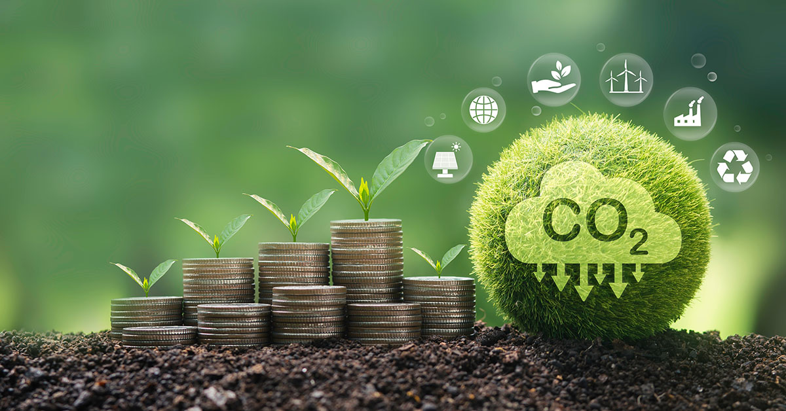
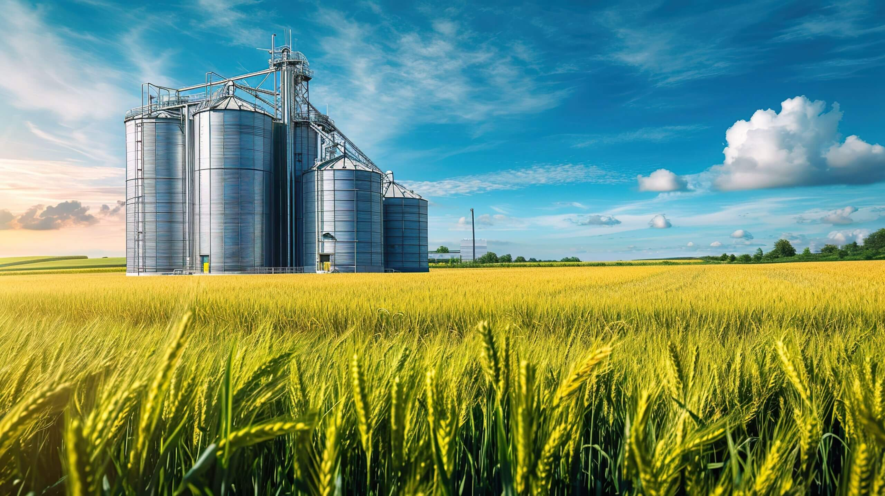

Agro Forte e Futuro Sustentável

O mercado de carbono emergiu como uma das ferramentas econômicas mais promissoras do século XXI para combater as mudanças climáticas globais. Seu funcionamento baseia-se na premissa de precificar as emissões de gases de efeito estufa (GEE), transformando o impacto ambiental em um fator econômico concreto. Ao atribuir um valor financeiro à poluição, o sistema incentiva empresas e países a reduzirem suas pegadas ecológicas, tornando a sustentabilidade um objetivo estratégico e rentável.
bla bla blabjhbhbjhbkjhbjkhbjhbkjhbkjhbjhbkjhb hjhjhjhjjh h j hj hjhjhjhjh hjh jh
bla bla bla kjh hjk hjk kjhjhhkjk hkj hjkkjh kjhk kjh jhkjhkjh kjh kjhjk hk kj hkjhkjkjhkjh kj kh kj hbla blakok okokokokokokok ok ok ok okokokokok ok ok ok ok o kok o k kok
como a descarbonização afeta seu cotidiano oijoi oijoi oijoijj j ioijoijo jiooij jioijoij oijoioji ojoijoi oij oijoij oijo oji oijo i
A descabornização vem afetando o mercado... ijhjkjhkjh kjh kjh kjhkjhkjhkjhkj kjh kj hjkkjhkj kjhk kjh kjh
bla bla bla shfsjdhksdjhf skdjfskdjfhskdjhskfjhsdkfjdh ksdjfhskjdfhskjfhdskjfhsdfjhskdj sdkfjhskjfhskdjfhskdjfhsk dfksjdfhsdkjfhsdfshkdjfhsdkjfshdkfj
sim sim sim nkfjskdjfsjfnskjndkjfnskjfnjdfnskjfnsdjnfskdjnfskdjfnskdjf skdjnfksdjfnkdjfns dkfjnsdkjfn sdkfjndskjfn sdkjfnsdkjfn skdjfn

O campo é muito legal pq campo faz comida e comida é bom dai nois come bastante kjkjkjkjkkakakakakakjkjk